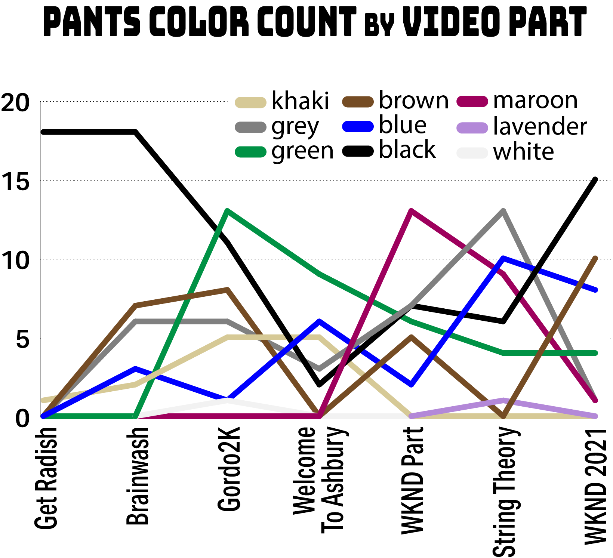
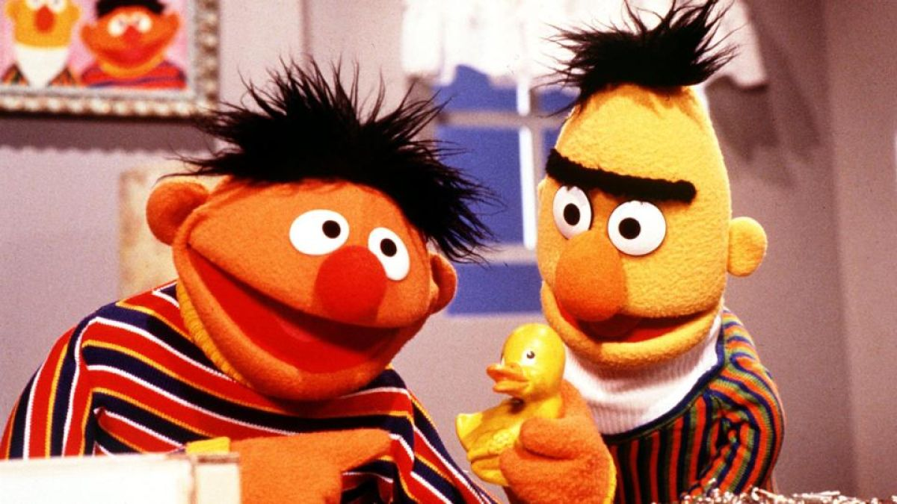
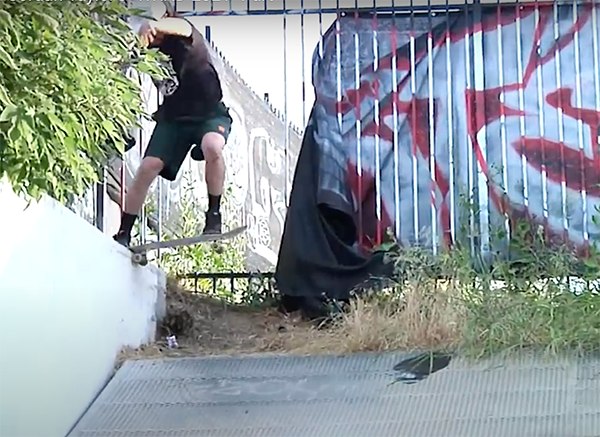

Spot hunter. Mirth maker. Studded belt manufacturer. Pro Skater. Jordon ‘Gordo’ Taylor has nestled into quite a comfortable place in our collective skater-hearts. He keeps things fun and festive with both his skating and comedy skits for companies like New Balance Numeric and WKND Skateboards. But beneath the facade of laughter and striped shirts there lies a dark and disturbed individual. A man tormented by, yet disconcertingly comfortable with, a myriad of personal demons… just kidding. He’s super friendly and awesome. Everybody loves Gordo and you should too.
4Ply wrangled up every full part Jordan has ever produced and then utilized the awesome power of mathematics to analyze the tricks, spots, and fits. We then confronted him with the hard numbers and percentage points to see what he had to say for himself.
DATA & METHODOLOGY
For the Gordo dataset (which will be referred to as the Gordataset from now on), we logged all the tricks from Jordan Taylor’s 7 full parts. Although Jordan has had clips in other skate videos, the Gordataset was limited to only his full parts, as these are generally what we consider when looking at the "career" of a skater. Guest tricks from other skaters in Jordan’s parts were not included. Please note: Jordan’s String Theory “Case Files” and the 5 minute ‘credits’ section of WKND 2021 was not included, either.
4Ply: What did you think of the Rotten Gorditas skits article we made for you? Did you get a chance to check that out?
Jordan: Yeah. I was pleasantly surprised because I had no idea you guys were doing that. It was actually pretty sick to read because I think they were all real quotes. I’m not actually sure. Were they?
4Ply: They were real. We put out the call on Instagram and then hit Grant up and made a Google Form and have people check the skits out. Did you actually read through all the reviews?
J: Yeah. I read through and some of them were pretty funny and on point and honest. I was cracking up reading some of those.
4Ply: There was a few we had to eliminate because it was clearly, like, ballot stuffing where every video got a 10.
J: They could’ve been super-fans, though. You never know.
4Ply: I thought it was interesting that a percentage of people didn’t even know who you were. They just kind of responded to the call to take a survey.
J: That’s awesome. I would love to watch someone who has no idea who I was, like a fly on the wall to watch them watch Shorts Over Pants.
4Ply: So, you’re kinda getting a reputation as being a comedy acting guy with the skits. Do you feel you’re getting pigeon-holed?
J: Um - I guess maybe a little. Hopefully not pigeon-holed but sometimes people pitch me skit ideas like as if I’m the skit guy and I’m like “eeeeeh”. I like doing skits but I’m not some, like, genius actor who knows what my next move is. I just like to fuck off with my friends and laugh. That’s more what that is.
4Ply: Do you feel like you need to be “on”?
J: I guess I get nervous because it’s fun for me to just mess around and act with friends and when someone says you’re good at it, like “you could be an actor”, I’m kinda like “really?”, and you start thinking “Am I good at this? Is it just a friend telling me that?" So now if we do a WKND skit I’ll kinda get nervous. Like, “Do people think I’m good at this and know what I’m doing? I’m supposed to be a great actor doing this skit right now?” So I kinda get nervous sometimes doing it so I can live up to this idea that I’m good at acting. So there is a pressure there that I’ll be good at that and that can backfire.
4Ply: With both the skits and the skate parts, are people sycophantic? Especially on social media? Do you get criticisms? Do you get haters?
J: For the skits? Not really, dude. It seems people either really like them and whoever is commenting and letting me know their opinion is all pretty down. I think that anybody who doesn’t like it probably doesn’t even care enough to comment. The haters don’t even bother.
4Ply: Are you getting internet famous?
J: Ahhh. No. No way. No.… I’m working on it.
4Ply: Do you have any favorite skate video skits? There used to be a lot of them. Like, every 411 part had to have some kind of skit intro. Do you have any favorites?
J: The Chomp On This one, dude. I don’t know what it was for and no one remembers it or knows what I’m talking about but it was sick. It was the guy driving in a taxi car and a skater skating down the street in the rain and then they cross paths at one point. And the skater just, like, looks up with a surprised face and airs over the taxi. I don’t know why but it always stuck with me. And then it just goes into a Chomp On This montage or something. It isn’t really a skit with dialog it is just randomly in there and nobody seems to remember it but me.

4Ply: It’s just kind of randomly there.
J: Yeah. Random. I mean, even little things in, like, Fulfill the Dream really stuck with me. Not even the skits but Steve Olsen jumping off a bridge and then they made a dummy for him.
4Ply: Yeah, after Hubba Hideout.
J: Yeah. Little snippets like that are so sick.
4Ply: Fulfill the Dream is a good example. Like, here’s the team on a horsey ride. And that’s three minutes of the video right there.
J: I love that. For sure anything in Fulfill the Dream. Those ones are rad.
4Ply: Are people pitching you ideas for skits?
J: Now that has actually been happening a lot more lately.
4Ply: Have you ever pitched a skit to New Balance that got rejected.
J: Hmmm, not really. They're pretty open to most ideas. Usually we just have a meeting and brainstorm together to see what sticks. I feel like I have some wild ideas so they’re good at helping me reel them back in to something we can actually do. Haha.
The Parts
4Ply: So, was Brainwash your only, like, full-length video? Cause I know String Theory was sort of what a modern full-length would be since shoe companies can’t really have the whole team in one video anymore, cause the teams are just so big. But, looking at the list I think Brainwash is the only, like, video.
J: Yeah, dude. I guess you’re right. I haven’t thought about that. That is probably the only full-length I was in. Except Get Radish, I guess.
4Ply: Oh yeah. Get Radish was your first part?
J: Its cool you found that part. I looked for it online and couldn’t find it.
4Ply: It’s out there. The resolution isn’t great but we found it. Anyways, it seems like your Brainwash part has some longevity maybe because it is from a full length. It seems like when there’s discussion of Jordan Taylor, that video gets brought up even though it is a pretty old part. It isn’t a huge contribution to your career considering what you’ve done since then.
J: That one is just cool because, dude, I grew up loving Toy Machine. So like looking back just knowing I had a part in a Toy Machine video… that’s just really cool for me. Like, just as a little kid loving it, you know.
4Ply: That brand just has so much longevity and people have such connection to it from its different eras. For me, particularly Welcome to Hell is by far my favorite skate video because as I got obsessed with skating that was what came out at the time.
J: Same. That one’s up there for me, too. Jump Off A Building / Welcome To Hell / Misled Youth… like all those. Growing up and watching those and then later I’m in a video where the monster comes out and laughs at the beginning, you know? It is just trippy. I don’t know. That one has a special place for me.
4Ply: That’s awesome. What about that Welcome To Ashbury part? How do you see that as part of your career?
J: I don’t know if I would consider that a part. It was just fun and goofing off. I think of a part like something that is a struggle and that one was just going out and skating.
4Ply: Your younger brother Logan is in the skate game as well; Do you intentionally not share a part with him. I know he’s had guest tricks in your part. Is it something you are conscious of? Are you competitive with him at all, or him with you? How is the dynamic?
J: No. We both do completely different tricks I think. It’s weird. He’s am for Lovesick and he has goals in skateboarding. He can impossible and back 3 and switch bigspin and he can do all these tricks that I can never even do on flat. Which is so annoying because he hasn’t even teached me that. But its never been competitive or purposely not shared a part. It’s just kinda like he’s always doing his thing and I’m always doing my thing and we meet in the middle somewhere.
4Ply: And I’m pitching the idea that, especially if Logan has a different bag of tricks, and also with him being goofy, of you two secretly sharing a part but you dress the same or have the same mustache or something like that, and basically be one skater. Like a Parent Trap situation.
J: I think you’re on to something with that. We talked about that before. I don’t know if it would be his part or mine. He super good so it would be a great part if we were combined into one person.
4Ply: I think it’s a good idea. More skaters could collaborate in that way. Combine forces to become one super skater.
The Data
4Ply: So let’s talk about the data. The team at 4Ply logged every trick from all your full parts and then we processed the dataset to create an analysis of your skating. So let’s get into the percentages and the top tricks:
J: I was curious about this. Like, do you guys have a computer program that can extract the tricks?
4Ply: Like trick recognition software?
J: Yeah. Grant and I were speculating on it and I was pretty sure that there is a program that does all that.
4Ply: No. We just writing it all down and pausing the videos and rewinding constantly. There’s some programing to help us analyze the data, but the spreadsheet is made by hand.
J: Oh man. I totally thought it was completely automated.
4Ply: Not yet, anyways. Speaking of spreadsheets, let’s look at your top tricks.
It is pretty typical that the ollie is on top and you’re no exception.
J: That kinda surprises me. I like ollieing but I wouldn’t have thought that I filmed that many. So does that include like ollie up, like in a line ollieing up a curb?
4Ply: Not really. Unless we feel it is significant enough of a gap. So an ollie up a curb we won’t generally include as a trick. A kickflip up a curb is enough to count as a trick. It needs to be a trick, not just, like, avoiding a crack in the sidewalk. But even without that it is still 3 times the next leading contender. Ollies have a significant lead. What would you think are your most common tricks?
J: I probably would say 50-50s or kickflips. I guess. I would almost think I filmed more 50-50s than ollies or something.
4Ply: Well, 50-50s and kickflips are numbers 2 and 3 with 11 fronstside 50-50s and 10 kickflips. But that is just straight-up 50-50s without any tricks in or out or any fancy pants stuff going on. And that is frontside.
J: Yeah, I don’t go backside often.
4Ply: So, digging deeper into 50-50s total, so that includes all tricks that involve a 50-50 in some way, there is 29 instances. Some of these are roll-on 50-50s, pole jams, or frontside 180 to switch 50-50 to a half cab out.
J: So, wait, does that count?
4Ply: It’s a 50-50, but it is a different trick than just a straight-up frontside 50-50. With this in mind, it can make some tricks seem less common than they are. The little variances are enough to technically change what the specific trick is. A good example of this is when we analyzed Fred Gall we discovered he has filmed literally 35 unique variations of 5-0 grinds.
J: Yeah. Yeah. I love that. That’s sick.
Percentages by Video
4Ply: Moving on, and maybe this is where Logan pretending to be you can help out, but switch and nollie tricks combine for just 7.6% of all tricks. So, you’re very regular footed.
J: Haha. Wow. That’s pretty brutal. I’m very regular footed so I’m mostly just skating regular or fakie. I didn’t think it was like that, though. I feel like I can skate switch decently like on flat or something, I’m not the best but I’m not the worst, maybe. But when it comes to filming something, that’s when you really know, like, oh yeah. I thought I can do a switch flip well on flat but now I can film it and it’s like “I can’t do this properly”... like going fast and stuff.
4Ply: Well, the good news is that the most recent part was 14% switch/nollie and String Theory was 12%, so it is slowly trending upwards. There’s more switch getting in there. And because we included the Welcome To Ashbury part in this analysis, which has no switch at all...
J: Oh gosh.
4Ply: Well that might’ve thrown the career average down a bit.
J: Well, it’s good that it’s growing.
4Ply: The Welcome To Ashbury, however, was 100% lines. So it brought that career lines average up.
J: I mean, I’ll try to put something together. I’ll always be checking around the spot to see what else we can do. How can we expand this and make it interesting.
4Ply: Another observation we have is that manuals were also surprisingly low. Also just 7.3%. Can you comment about that?
J: Haha. That’s weird too. I’m kinda surprised on that too. I thought I would manual more than I would skate switch. Cause I do love a good manual. Or, like, trying to connect a manual with, like, another obstacle. But, I guess not as much as I thought.
4Ply: There is a chance that if a ‘combo’ trick has a manual as an element but another part of the trick takes precedence, it will be recorded not as a manual. Tricks are currently logged as only belonging to one type of obstacle. If you were to do a ledge trick into a manual, 4Ply would record it as either a ledge trick or a manual, not both.
J: Um, ok.
Obstacles
4Ply: Let’s talk obstacles. The most common obstacle you skate is ledges which is 22.7% of your tricks. And that’s been pretty consistent throughout your whole career. So, about a quarter of all your tricks are ledge tricks.
J: Interesting. I’m a ledge skater, dude. I’m a technical ledge skater.
4Ply: And that doesn’t include hubbas. We scored hubbas separate from ledges for you. And there were a few of those as well. You got some handrails in there. About 9% handrails overall. Some videos have no handrails, but back in Get Radish it was over 20%. So it might be a youth thing.
J: Yeah. That’s an age thing, maybe, huh? Or as time goes on it’s like the handrail game just got out of control and I’m like, "Yeah, I can’t go that route”.
4Ply: OK, here’s something interesting for you as well: The amount of tricks that go into banks has been going up. The last part had 14 different tricks into a bank. String Theory before that had 13. Other than that, it’s maybe been 4 or 7, so the into bank things has jumped up.
J: Oh wow. I love my banks, dude.
4Ply: But on the flip side, there is, like, no transition skating. Are you just not into transition skating? Is it something you didn’t grow up skating?
J: I kinda grew up skating it, like mini ramp and stuff. But I’m just scared of transition. It scares me to the point where I’m like.. I can’t even. It’s kind of past the point. Like surfing. I’m past the point of learning. Like, when I get out there in the waves I think, oh it’s a mellow day with 2 foot waves, I’m gonna try. Bu then I go out there and it feels humongous. That’s what tranny feels like to me now. When it gets over head high it just isn’t happening.
4Ply: Wait. I see here that even more than ledges, gaps are big for you too. 26.9% of your tricks have involved gaps.
J: Interesting. Yeah. I would not think that either. I would not think that I skate a lot of gaps. Like, I don’t find myself ever like “Look. A gap.” I don’t know how that’s possible.
4Ply: Well. A lot of things qualify as gaps. Not just like “huge-gaps” gaps. But flat gaps as well.
J: Still seems high.
4Ply: We also tracked some of the more uncommon spots. There’s a grand total of 26 tricks that involve rooftops. So, like, 7 to 9 roof tricks in each of the more recent video parts, starting with Gordo2K. So, other than the first WKND part, there are a lot of rooftops.
J: Haha. Yeah. I definitely find myself on rooftops a lot. I think that just comes from going to a spot and there is really nothing going on there for me so I kinda of just start looking up. And then one day it worked. Like, “Oh wait. There’s nothing down here but there’s kind of a sick spot up there on the roof.” So ever since then its triggered me to keep looking at them. And then, you know, growing up on Misled Youth and Thrill Of It All where Ellington’s part opens up with him sticking a kickflip off a roof. He doesn’t even land it. And things like that always stuck with me. I’d go to my neighbor’s house and try and drop in on his shed. I think a lot of it comes from those old videos. I think skating roofs is pretty sick but I’m not sure if I really want to be the roof guy.
4Ply: Similarly there’s a handful of tricks on dumpsters and there’s a handful of tricks that involve cars in one way or another. Whether it was hippie jumping through the window of an open door or rolling on the roof of a car or that moving truck bed boardslide you did.
J: Yeah. I got some more ideas with cars coming up but I don’t know if they’ll pan out. We’ll have to find out. Yeah. Dumpsters. Same thing. Growing up and going behind the grocery store and just skating off the dock. And then incorporating this dumpster. I feel like that’s what people used to skate when I watched videos as a kid. They would always skate over the dumpster off the dock. Or even those old shopping cart handrails they’d put down the dock. Remember those? I’d love to find one of those. That would be sick.
4Ply: Yeah. Those shopping cart corrals.
J: Yeah, and they would just make it a handrail down the dock. So sick.
4Ply: How about the trick where you simultaneously do a noseslide on one obstacle and a tailslide on another? We logged them a ‘nailslides’, but what do you call them? And how would you consider it frontside or backside?
J: I call it a bridge slide. Like, you become a bridge between the two ledges. But I’ve heard it called a nailslide before. I think of it like a rail in the middle when considering it frontside or backside.

4Ply: That’s a logical way to think about it. How about this: Until the recent WKND 2021 part, You didn’t have any tricks in slow motion. None.
J: That’s crazy. It’s funny that when I showed Grant a cut of the String Theory part and he told me that I should get some of those things in slow motion. I guess I just am not looking better when it’s slower.
The Fits
4Ply: Probably more important than tricks, we also tracked pants colors… as best we could. In some of the older videos the resolution is really low so all the pants just kinda look blackish.
How much thought goes into pants? How much thought do you put into an outfit when you go out to film?
J: Ummm. Not a whole lot. I mean I wanna feel kinda cool on my skateboard. I guess you have to feel kinda ok or cool in your clothes and then feel like you can have a good day skating, maybe. Like if you can’t move in your pants it’s like just gonna fuck with you the whole day skating. So, as far as that goes, yeah. I think about flexibility. I don’t want to be wearing like 5 different colored camos or something. I don’t know. Or maybe I do? Shit. Maybe I just haven’t gotten there yet. But for the most part with pants I’m just going with what feels good and comfortable.

4Ply: Is that the same pair of maroon pants we’re seeing over and over or do you have several pairs?
J: It’s that same pair of maroon pants that I’ve been stoked on for a while. Everyone thinks they are purple pants, but they are maroon. I got a clip in the new video in them and it was one of the earliest clips I got. But it’s just been the one pair.
4Ply: So have they been retired?
J: Yeah, they’ve been retired.
4Ply: What about the one clip in lavender pants?
J: Ha. Maybe that is what they are talking about when they talk about my purple pants. Those were just white pants the I dyed with some RIT dye one time.
4Ply: Another thing 4Ply tracked was the prevalence of striped shirts, which were mostly horizontal but we also included the vertical stripes. Even if it was under a hoodie, if we could spot it we counted it. For your entire career, you have worn striped shirts a solid 21.4% of the time.
J: I love the striped shirts. I’m into it. Ha, that’s awesome.
4Ply: It peaked out with your first WKND part at 39%, and has declined down to 28% in your most recent part. Comments?
J: I got to get my that striped shirt game up.
4Ply: What if you and Tom K shared a part and you were all in horizontal stripes and Tom K wore vertical stripes like Ernie and Bert?
J: I guess that could be funny.

4Ply: So that is a good segue into the recent outlying and more noticeable outfits of late. Having the sleeveless shirt, how much thought went into that? How much is it a put-on versus genuinely you wanted to show your arms for this clip?
J: I think it’s pretty genuine, honestly. Sometime I’ll give some extra thought as to what I’m wearing. Sometimes I review what I’ve got for the part already and think, "Yeah, I’ve got a bunch of clips in that shirt already. I better take that one out of the rotation.”
The wilder stuff is that maybe I was just a little insecure at first, and then I just got to a point where I’m like “Why am I insecure about this? I want to wear this.” It goes back to seeing people I grew up on wear stuff like that. Like Greco had hacked sleeves. Or like Reynolds would wear a tie when he skated. Like a blazer with a tie. I’m like, dude that looks so sick. But you think, “Who am I? I can’t pull that off.” But then at some point you’re just, like, “You know what, fuck it. I want to wear that. Who gives a shit?” I think it’s just maybe not giving a shit anymore. I just want to wear what I want to wear.
4Ply: I think you’re in a good place where even if people don’t like it, you haven’t established yourself as a ‘cool guy’. You seem like someone who’s having fun so you can get away with it. If you do show up with just a leather jacket and no shirt it could be interpreted as a character that is doing this trick, or something.
J: Ha. I can always fall back on that. It is just some other person I’m playing who is wearing that.
Other Outfit Observations
- Jordan in gloves (WKND 2021)
- Jordan in a silly hat (Brainwash)
- Jordan in a House of Hammers shirt (String Theory)
- Jordan with no shirt (Welcome to Ashbury)
- Jordan with no sleeves (WKND 2021)
- Jordan in shorts (WKND 2021)

4Ply: The Shorty’s shirt…
J: I’ve always wanted one of those Shorty’s shirts, so I got one and got a clip in it. I’m aware that I’m wearing it, but it isn’t a gimmick. Same thing with the studded belts. I just wanted to do this so I did.

4Ply: And now you’ve started your own clothing brand that seems to be centered around the studded belt. That’s the showpiece for Loosey brand. What made you decide to make belts?
J: I think that, yeah, it’s the same kind of thing. I always wanted a studded belt as a kid and never had one. I’m not sure what sparked it. One day I was like, you know what, I want a studded belt. Maybe I saw one somewhere and I was like, “It’s time”. That kinda thing. And then it turns out it was hard to find the right fitting one. Like they all had 3 rows of studs and that almost doesn’t fit the pants I wear properly. So I had to find a 2 row one, and that was kind of hard. And then, I was like “I’m just gonna try and make one how I want it.” And that’s how that happened pretty much.
4Ply: Did you try to hand make one first? Like with a Bedazzler?
J: Well. I bought a studded belt off Amazon that I really liked. This was the best one. How do I make this? How do I rip this one off? But then it’s kind of hard finding the right material. I got, like, 5 samples before I got it how I wanted.
4Ply: And then did you do market research? I feel like if you’re starting a t-shirt brand you can do whatever. You don’t have to look at the space to see who your competing with. But with belts, are you looking at other companies and competitors, or is it not nearly as sophisticated as all that?
J: I would say not nearly as sophisticated as that. But, if I see a company I like I’ll look at them differently now, you know. I’ll look a little further into it, rather than just say “that’s cool”. I’ll be like “Huh? Why is that cool?” A little more thought, I guess.
4Ply: Are you just in that mindset now that you’re making belts that’s all you see is people’s belts.
J: Haha. Naw. Not really. Maybe I should though.
4Ply: Is the company named after your dog, Lucy?
J: I mean, it’s spelled differently, but yeah, there is a connection there. ‘Anything’ was another name I had, but my wife said that was stupid. Sometimes it is the brand that makes the name cool, not the other way around.
4Ply: Is your basement actually Loosey headquarters? How much truth was in that one video?
J: That is 100% true. That’s the Loosey Headquarters, dude. The basement. Anything goes down there.
[Loosies skit GIF]
4Ply: Does it still have that writing on the wall?
J: Oh yeah. That’s still up there. That’s permanent marker. I’m not sure if I’m gonna paint over it or just let it hang out there for a while.
4Ply: Speaking of your dog, do you take her skating with you? That’s happening a lot these days, having a dog at the session.
J: Naw, I tried that but she can just be too aggressive. Grant has a new dog named Bondo, so maybe he’ll be the dog in the session guy.
Facts
- 7 - Parts
- 235 - Total number of tricks
- 5 - Tricks involving dumpsters

- 4 - Tricks on the back of flat bed trucks
- 1 - Tricks on a moving vehicle
- 5 - Additional tricks involving vehicles
- 3 - Tricks that involve a 'duck under'
- 10 - Second angles or repeated tricks
- 14 - Total bluntslides
- 12 - Unique bluntslide variations
- 13 - Sum of all 5-0s
- 11 - Unique 5-0 variations
- 7 - Wallrides
- 7 - Hippie jumps
- 3 - Pole jams
- 3 - "Bridge slides"
- 3 - Unique "bridge slide" variations
- 2 - 360flips
- 1 - No complies
- 1 - Crooked grinds
- 9 to 1 - Kickflip to heelflip ratio
- 17 - Switch tricks
- 11 - Fakie tricks
- 1 - Nollie trick (nollie kickflip, String Theory)
- 0 - Full loops

Get more Gordo on his Instagram.
Big thanks to Grant Yansura at WKND.
Follow @4plymag on the 'gram and hit us up for free stickers or to let us know how statistical analysis has the potential to ruin skateboarding. Or both.